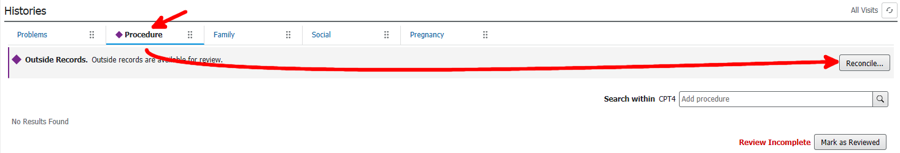
Most procedures will need to be discarded. Occasionally, a procedure will be listed that should be included in the patient's record.
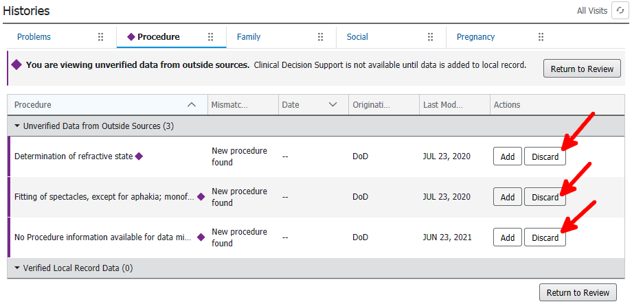
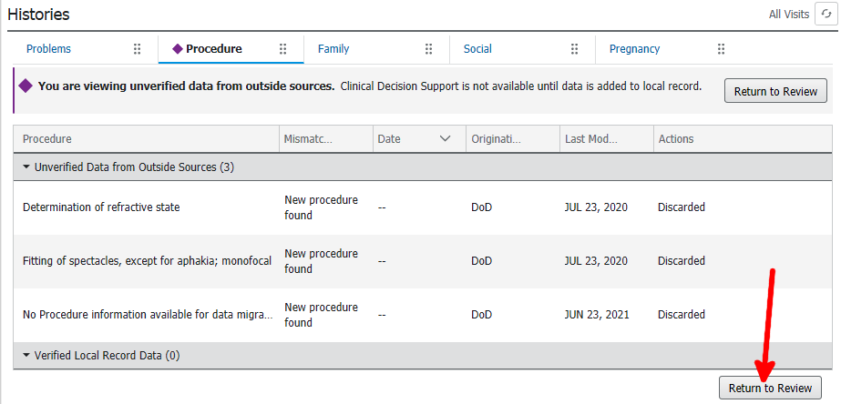
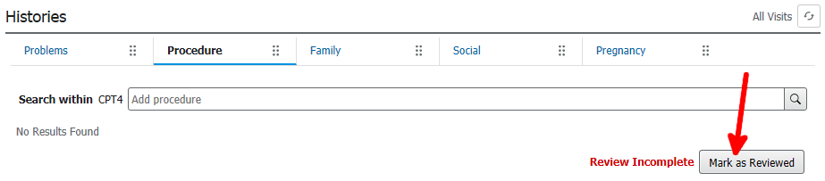
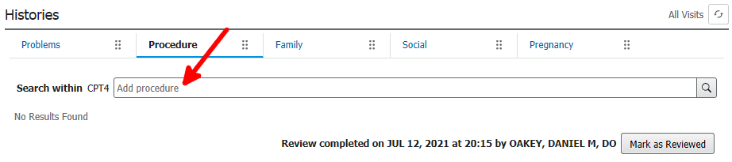
A procedure can be "free-typed" or a codified procedure can be selected.
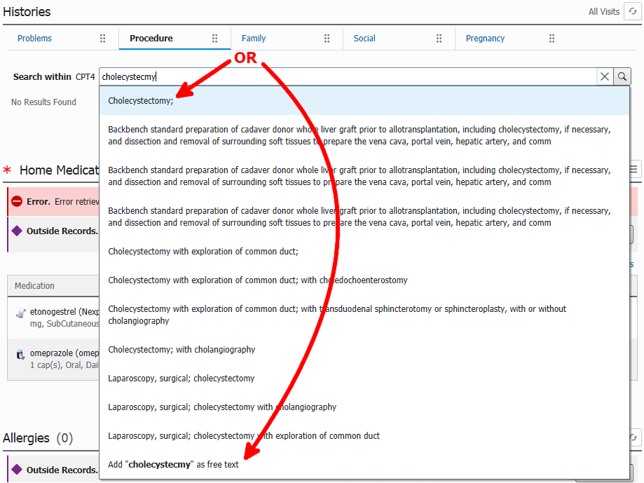
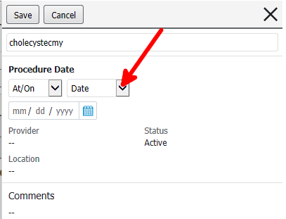
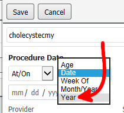
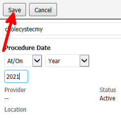
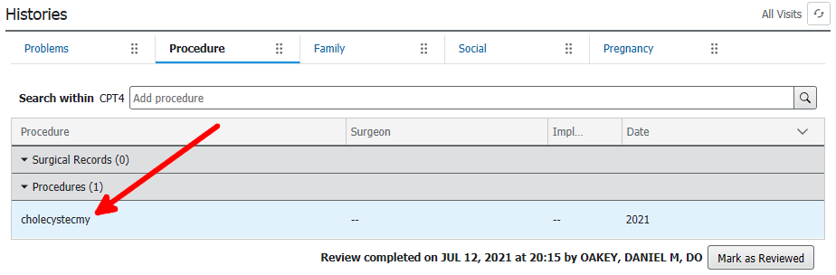
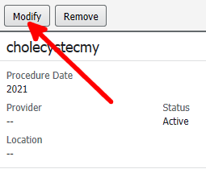
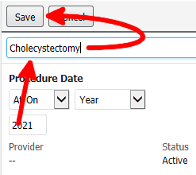
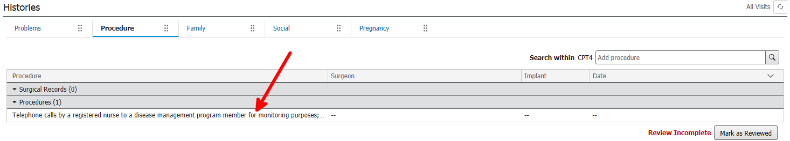
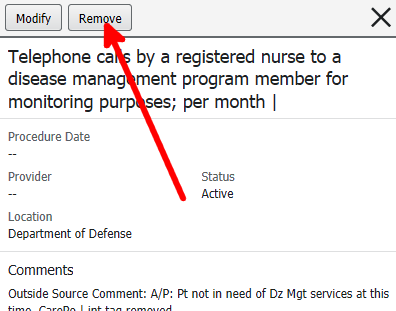
The first time someone does a procedure reconciliation for a patient, it will have a lot of garbage. Please don't skip cleaning up a procedure list.
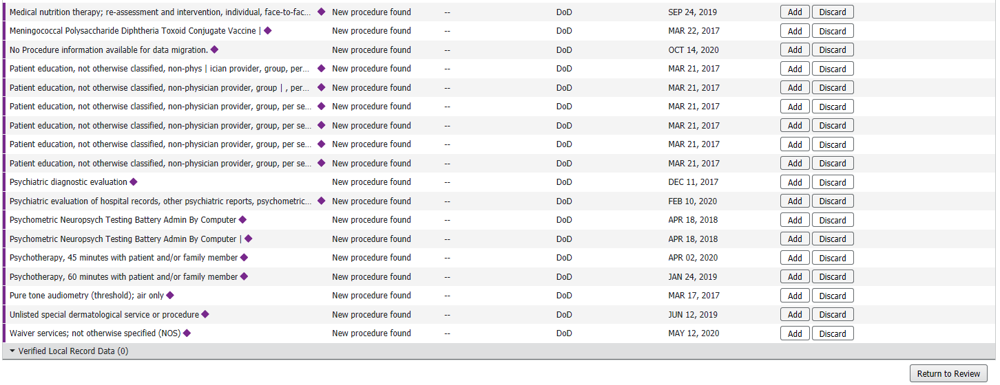